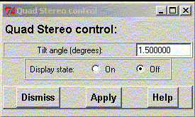

**************************************************************************
Plot hardware stereo widget
Leif Laaksonen CSC 2000
**************************************************************************
If your display device supports hardware based stereo (stereo in a window)it is possible to start gOpenMol in the quadstereo mode and turn the hardware stereo on.
gOpenMol can be started in the quadstereo mode at startup using the "-s" startup command line option.
rungopenmol -s
There is only one value that have to be defined:

Line command: define quad
/***********************************************************************/
/* Added by Sigismondo Boschi - CINECA - Italy:
Stereo for High-end graphic machines, e.g. SGI Onyx2
The high-end Stereo graphics is so called "quad buffer" or
"stereo-in-a-window". It allows to have stereo and double-buffering
without the need of splitting vertically the viewport -
and consequenty you do not need to have full-screen resolution.
The basic steps are:
1) to have a stereo-capable visual (GLUT_STEREO)
2) draw the left eye in the BACK_LEFT drawing buffer:
glDrawBuffer(GL_BACK_LEFT);
3) draw the right eye in the BACK_RIGHT drawing buffer:
glDrawBuffer(GL_BACK_RIGHT);
3) put them in the FRONT_LEFT & FRONT_RIGHT by swapping once the buffers:
glutSwapBuffers();
If you need to plot "non-stereo" staff just plot it to the BACK buffer:
glDrawBuffer(GL_BACK);
It will be authomatically plotted in both the back buffers. In this way
you can have non-stereo images in a stereo-window.
In order to setup the stereo you need to give a setmon, but the argument depends
on the hardware architecture. In our machine the framebuffer setups are in
/usr/gfx/ucode/vfc/vfs/. The ones with an "s" are the stereo ones, e.g.:
1280x1024_96s.vfo
On our Onyx we use ircombine, since the machine has many graphic pipelines, and
many channels (displays). Ircombine manage all of them.
About left and right buffers: beware they exists only if you have a "quad buffer"
framebuffer - also called "stereo-in-a-window" capable. If stereo is not active
only the left buffer is projected, and so it is normal you see only the left eye
output. It is also possible you can draw the right buffer, but if stereo is not
activated, you have no way to see it. Anyway, if it runs, it should means the
display is quad buffer capable, but not correctly set-up. That is what comes from
my small experience anyway.
When you invoke "swapbuffers" both buffers are swapped in the same moment:
back_left goes front_left and back_right goes front_right and viceversa.
On other low-end machines, like SGI O2, usually you have not
"stereo-in-a-window", but just "full-screen-stereo", that is, you open a full
screen window, and the upper part of the screen is projected to the left eye, the
lower to the right one. I can give you some pointers, where I have collected the
information.
- "man stereo" on an SGI
- http://techpubs.sgi.com/ - and look here for "stereo".
*/
/***********************************************************************/
**************************************************************************